Loading ...
|
4-4-2
|
Argentina | 3 | - | 2 | Cabo Verde |
4-1-4-1
|
| HT 1-0 | ||||||
|
FIFA World CupSaturday 4 July 2026
|
||||||
- Venue
- Miami Stadium
- Attendance
- 64,478
- Referee
- Drew Thomas Fischer
Goal29'
L. Messi
Assist: Lisandro Martínez
Substitution63'
Lautaro Martínez
J. Alvarez
Substitution64'
T. Almada
N. González
Substitution84'
R. De Paul
L. Paredes
Substitution86'
F. Medina
N. Tagliafico
Goal92'
Lisandro Martínez
Assist: A. Mac Allister
Substitution104'
N. Molina
G. Montiel
Own goal111'
Diney Borges
Yellow card115'
G. Montiel
Whistle45+5'
45+5'
Whistle90+9'
90+9'
Whistle105'
105'
Goal59'
Deroy Duarte
Assist: Ryan Mendes
- 2
Substitution67'
Laros Duarte
Jamiro Monteiro
Nuno da Costa
Dailon Livramento
Yellow card68'
Kevin Pina
- 2
Substitution80'
Ryan Mendes
Willy Semedo
Jovane Cabral
Hélio Varela
- 2
Substitution100'
Deroy Duarte
Yannick Semedo
Kevin Pina
Gilson Benchimol
Goal103'
Sidny Cabral
Assist: Yannick Semedo
Argentina | |
|---|---|
Goalkeeper | |
| 23 | E. Martínez |
Defender | |
| 6 | Lisandro Martínez 92' |
| 13 | C. Romero |
| 25 | F. Medina 86' |
| 26 | N. Molina 104' |
Midfielder | |
| 7 | R. De Paul 84' |
| 16 | T. Almada 64' |
| 20 | A. Mac Allister |
| 24 | E. Fernández |
Forward | |
| 10 | L. Messi 29' |
| 22 | Lautaro Martínez 63' |
Substitutes | |
| 3 | N. Tagliafico 86' |
| 4 | G. Montiel 104'115' |
| 5 | L. Paredes 84' |
| 9 | J. Alvarez 63' |
| 15 | N. González 64' |
Cabo Verde | |
Goalkeeper | |
| 1 | Vozinha |
Defender | |
| 3 | Diney Borges 111' |
| 4 | Pico Lopes |
| 13 | Sidny Cabral 103' |
| 22 | Steven Moreira |
Midfielder | |
| 6 | Kevin Pina 68'100' |
| 7 | Jovane Cabral 80' |
| 14 | Deroy Duarte 59'100' |
| 15 | Laros Duarte 67' |
| 20 | Ryan Mendes 80' |
Forward | |
| 21 | Nuno da Costa 67' |
Substitutes | |
| 9 | Gilson Benchimol 100' |
| 10 | Jamiro Monteiro 67' |
| 16 | Yannick Semedo 100' |
| 17 | Willy Semedo 80' |
| 19 | Dailon Livramento 67' |
| 26 | Hélio Varela 80' |


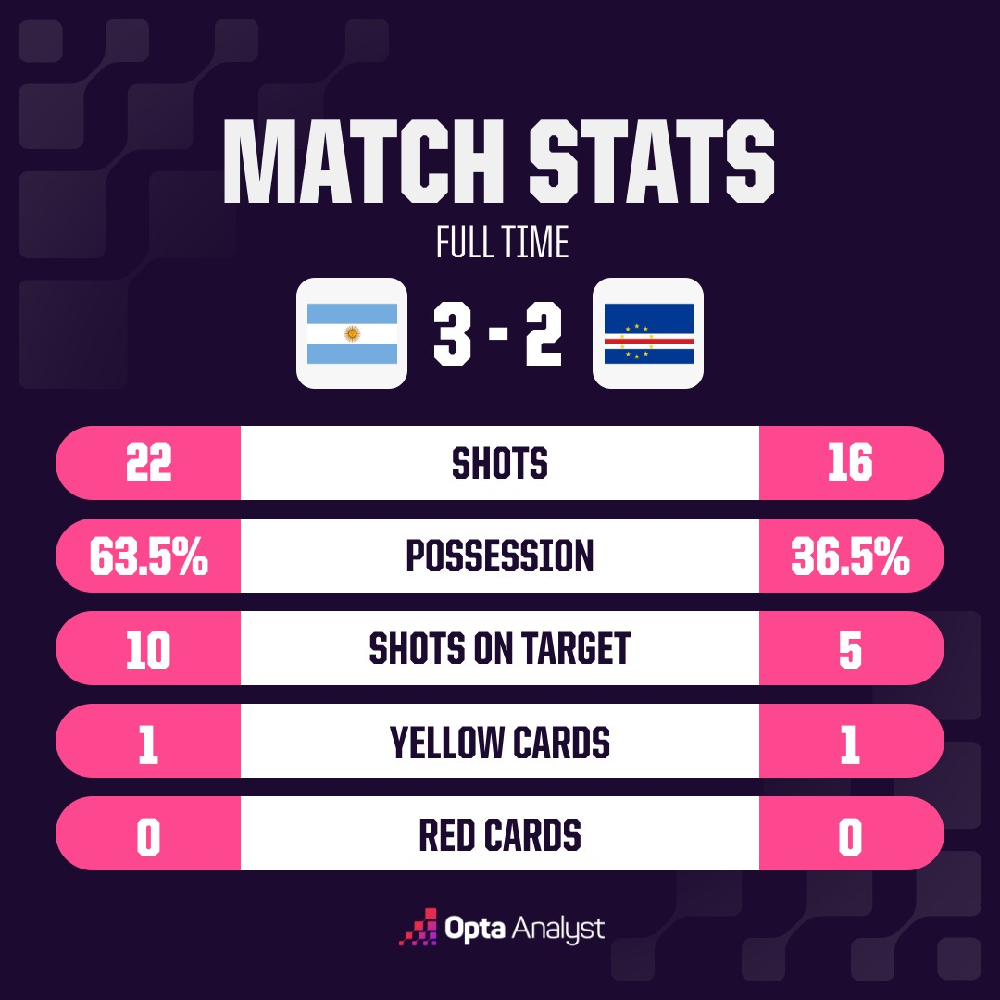
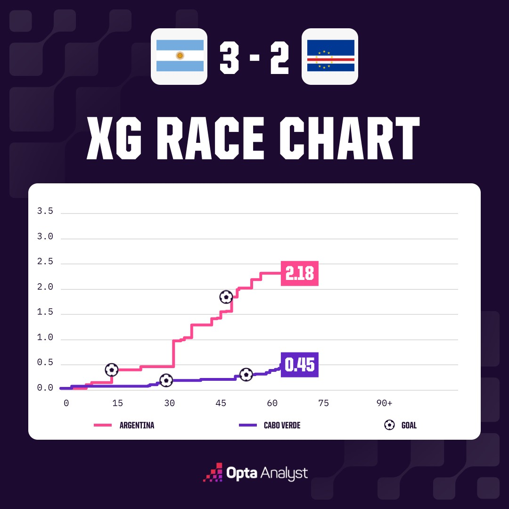
125'
Argentina have won their last 4 games in the FIFA World Cup, their last longer winning streak was from 15th June 2014 to 5th July 2014, a run of 5 games.
125'
Cabo Verde have failed to win in their last 4 games in the FIFA World Cup, their longest winless streak in the competition (since at least 1965/1966).
122'
That is a disappointing effort from Hélio Varela, who went for glory but got their attempt wrong, and the shot sailed off target. A frustrating moment for Cabo Verde.
122'
Great block from Leandro Paredes, as they get in the way of an attempt from Jamiro Monteiro that might have been set to cause the goalkeeper some problems. Solid defending from the Argentina player.
121'
Cabo Verde win a corner after Hélio Varela sees a shot diverted wide by Lisandro Martínez. Can Cabo Verde make this opportunity count, or will Argentina defend this?
120'
It's all hands on deck for Argentina as they defend their lead, making a wave of critical blocks and clearances
120'
Offside! Well-timed defensive work from Argentina, as their back line steps up and catches Dailon Livramento offside. They had just strayed too early, as Cabo Verde search for the goal they need.
119'
Save! A big stop from Emiliano Martínez, who reacts to keep out Diney Borges's attempt from inside the area.
116'
Sidny Cabral's effort is deflected out for a corner. Can Cabo Verde make anything of this set-piece?
115'
Yellow card! Gonzalo Montiel will have to be careful from now on after they are cautioned.
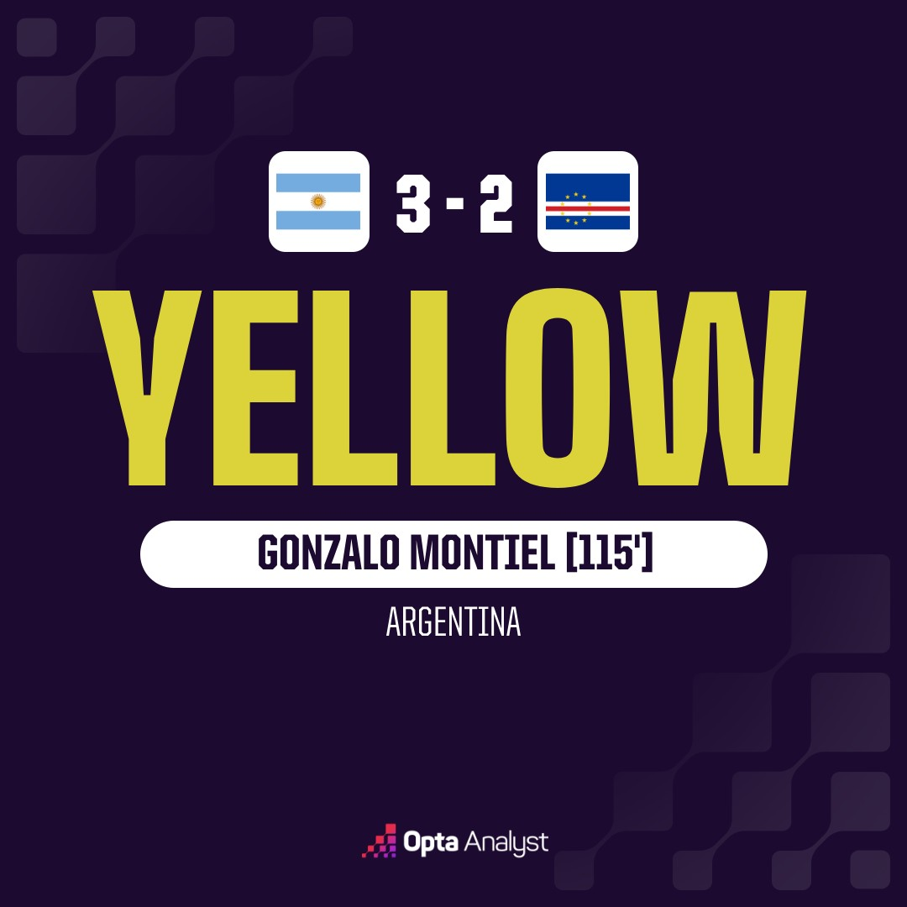
115'
A free-kick in a dangerous position now for Cabo Verde, after a foul from Gonzalo Montiel on Hélio Varela. Can Cabo Verde make Argentina pay for that rashness from Gonzalo Montiel?
114'
That might have been going in! A fantastic block from Gonzalo Montiel, who gets in the way of a goal-bound effort from Willy Semedo. Would the goalkeeper have been beaten? We will never know.
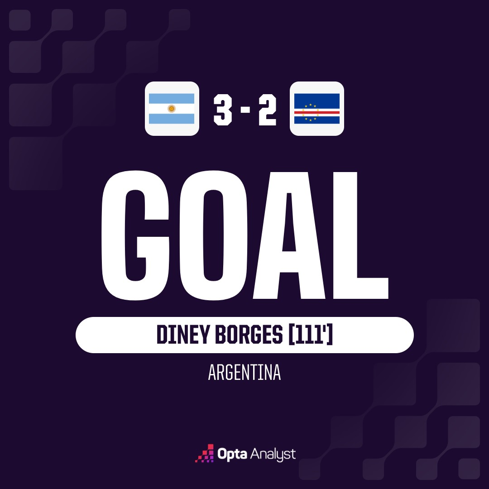
111'
GOAL! It’s an own goal from Diney Borges, who has turned into their own net to hand Argentina the lead late on. Can they hold onto it to see out victory, or will there be a comeback from Cabo Verde?
111'
WHAT A MISS! Oh dear, oh dear, that is an awful attempt from Cristian Romero, as a huge chance for Argentina to score the goal they need goes begging. What a let off for Cabo Verde, though. They will have to defend better than that from here on out!
111'
Corner! The ball goes behind and now Argentina will aim to deliver a good ball into the penalty area and test that Cabo Verde defence, which has been frustrating them in recent minutes.
110'
A foul from Willy Semedo on Nicolás Tagliafico sees Argentina win a free-kick, but it is not in a dangerous position, so Cabo Verde should be confident they can defend it easily enough.
109'
Offside! As Argentina search for the goal they need, Nicolás Tagliafico looks set to get in behind the defensive line, but the assistant's flag is up.
108'
A chance goes begging as Yannick Semedo gets off a shot that does not hit the target. They might have done better with that one, but instead it is a goal-kick to Argentina.
107'
A free-kick in a dangerous position now for Argentina, after a foul from Jamiro Monteiro on Alexis Mac Allister. Can Argentina make Cabo Verde pay for that rashness from Jamiro Monteiro?
106'
That might have been going in! A fantastic block from Sidny Cabral, who gets in the way of a goal-bound effort from Gonzalo Montiel. Would the goalkeeper have been beaten? We will never know.
106'
Vozinha has made 8 saves, his highest total in a single match in the FIFA World Cup.
106'
SAVED! Good work from Vozinha, who stands firm to deny Lionel Messi, who managed to get a shot away from inside the Cabo Verde area.
104'
Substitution! Gonzalo Montiel replaces Nahuel Molina for Argentina as the manager shuffles the pack. Can Gonzalo Montiel make an impression as this match continues?
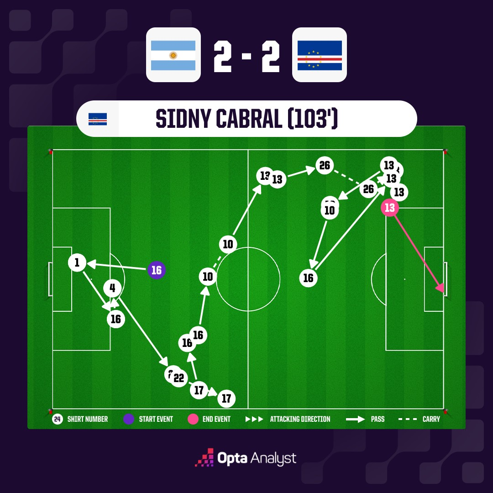
103'
Yannick Semedo has assisted his first goal in the 2026 FIFA World Cup.
103'
Sidny Cabral has scored his first goal in the 2026 FIFA World Cup.
103'
GOAL! Cabo Verde drag themselves level thanks to Sidny Cabral's effort from inside the area. It's all square!
100'
Cabo Verde are making a tactical change. Kevin Pina is leaving the field and in their place comes Gilson Benchimol – we will soon see if this switch has the desired impact.
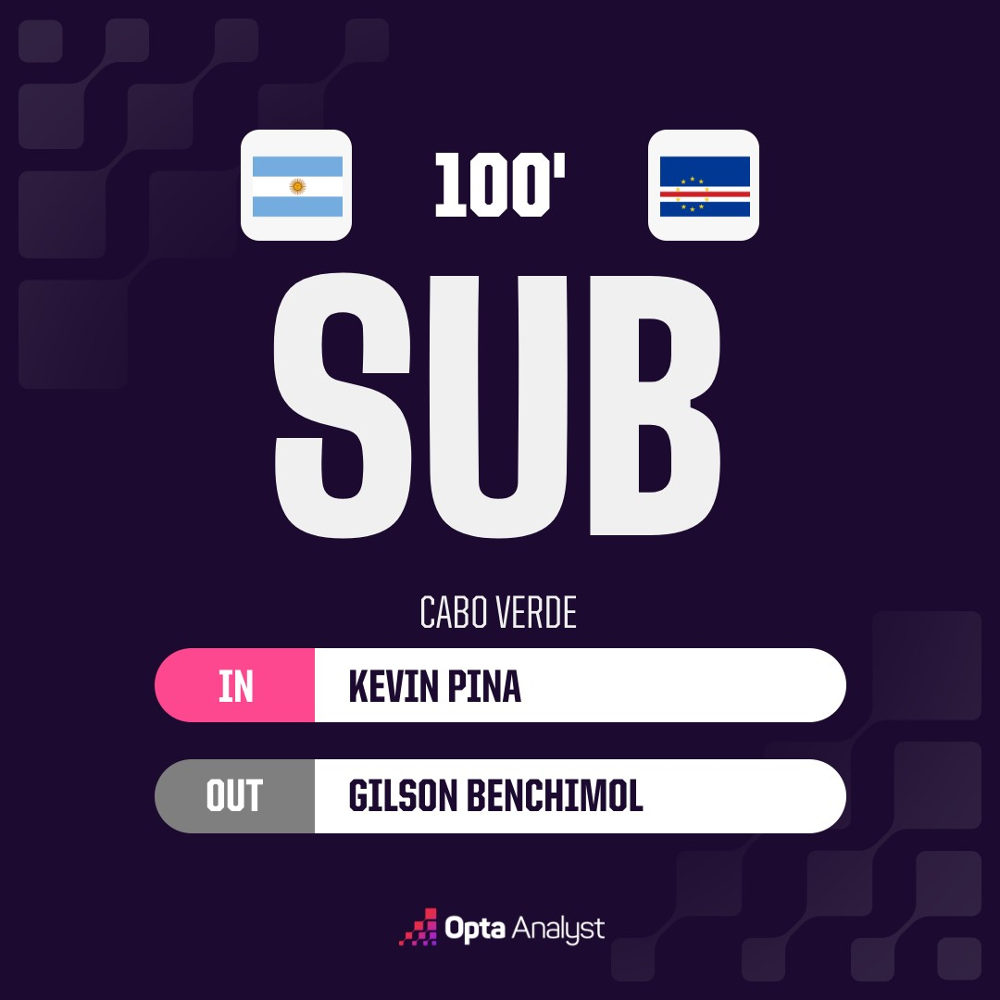
100'
A substitution for Cabo Verde sees Deroy Duarte replaced by Yannick Semedo. There does not appear to be any obvious sign of an injury, so that is a tactical switch.
99'
BLOCK! An intervention from Jamiro Monteiro might have just prevented a goal, with the defending player getting in the way of an attempt from Enzo Fernández. Solid defending there!
98'
CORNER! The pressure is building for Argentina as they win a set-piece after Julián Alvarez's attempt is blocked by Sidny Cabral and diverted out of play.
98'
Shot blocked! Lionel Messi unleashes an attempt at goal, but the ball does not reach its target thanks to Pico Lopes, who makes a solid block to stem the danger – for now.
98'
Masterclass in game management from Argentina. They're making Cabo Verde chase ghosts with these patient passing moves, content to keep the ball until the final whistle.
97'
It’s backs to the wall now — Argentina throwing everything into defending their advantage, with a flurry of crucial interventions.
97'
That might have been going in! A fantastic block from Julián Alvarez, who gets in the way of a goal-bound effort from Steven Moreira. Would the goalkeeper have been beaten? We will never know.
97'
A chance now for Cabo Verde to get a good delivery into the box, after the ball is diverted behind for a corner. Cabo Verde have been pushing for what would be a key goal, but Argentina have stood firm so far.
97'
Set-piece after set-piece - Cabo Verde are turning up the pressure as they search for a breakthrough.
97'
That is a disappointing effort from Diney Borges, who went for glory but got their attempt wrong, and the shot sailed off target. A frustrating moment for Cabo Verde.
96'
Can Argentina survive here? They will have some defending to do after the ball is turned behind for a corner kick. Will Cabo Verde take this opportunity and grab the goal they have been pushing for?
96'
It is a corner now to Cabo Verde, with Argentina somewhat hanging on here as they look to hold out for a positive result. Can Cabo Verde make something of this set-piece opportunity?
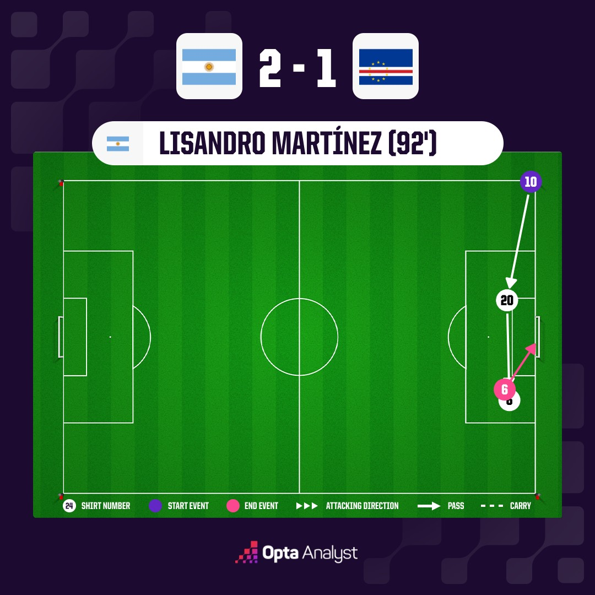
92'
Alexis Mac Allister has assisted his first goal in the 2026 FIFA World Cup.
92'
Lisandro Martínez has scored his first goal in the 2026 FIFA World Cup.
92'
GOAL! What a moment for Lisandro Martínez, who has found the back of the net from inside the 18-yard box to put Argentina ahead in the closing stages. Will that be enough for Argentina to claim the victory?
92'
Can Cabo Verde survive here? They will have some defending to do after the ball is turned behind for a corner kick. Will Argentina take this opportunity and grab the goal they have been pushing for?
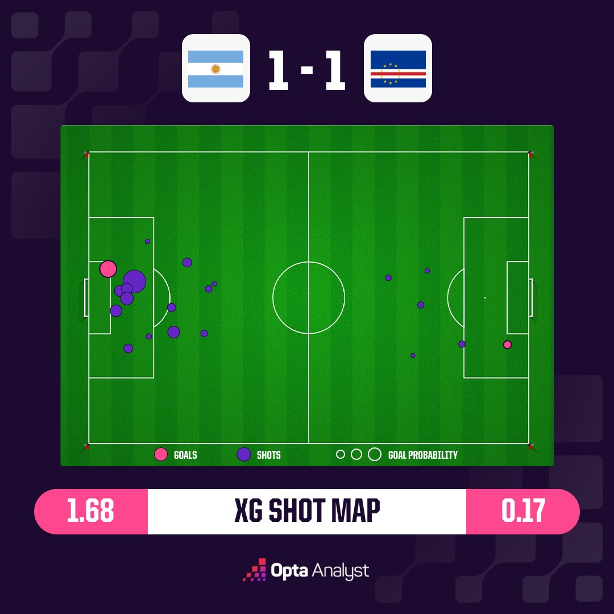
90+8'
A rash challenge from Willy Semedo, who sends Nicolás Tagliafico tumbling, giving Argentina a free-kick. It is not in a threatening position, but it gives them a chance to get back on the ball.
90+6'
Nico González goes in on Steven Moreira and concedes a foul. The free-kick is not in a particularly dangerous area from Argentina’s viewpoint, though.
90+5'
A foul from Julián Alvarez on Vozinha sees Cabo Verde win a free-kick, but it is not in a dangerous position, so Argentina should be confident they can defend it easily enough.
90+5'
Save! A big stop from Vozinha, who reacts to keep out Enzo Fernández's attempt from inside the area.
90+5'
Lionel Messi goes for goal with a strike from distance, but Vozinha is able to watch it all the way and make the save. A bit of a tester, there.
90+4'
Foul! A free-kick now in a dangerous area for Argentina, after Lionel Messi is fouled by Jamiro Monteiro. Can Argentina make the most of this opportunity?
90+2'
Vozinha has made 5 saves, the first time he has made at least 5 saves in a match in the FIFA World Cup since facing Spain on 15th June 2026 (7 saves).
90+2'
That was hopeful! A bit of a punt from Leandro Paredes, who goes for goal from distance, but Vozinha makes the save.
90+1'
In the last 15 minutes, it is Argentina who have dominated the ball, having seen 80.62% of the possession, yet they have not been able to go and turn that into a goal just yet, with their opponents standing firm.
89'
BLOCKED! That was close. Alexis Mac Allister got off a shot, which was heading in, but Pico Lopes was on hand to make a vital intervention. Great block!
87'
Corner now for Argentina, as they see a shot from Alexis Mac Allister deflected out of play for a set-piece. Cabo Verde have some defending to do, here. Could this result in a big opportunity?
86'
A lapse in concentration from Hélio Varela, as they stray offside and bring to an end what was a promising move for Cabo Verde, who are pushing hard for the goal they so desperately want.
86'
That is bad news for Argentina, as they suffer an injury blow, with Facundo Medina having had to receive treatment before then making their way off the pitch. Nicolás Tagliafico is coming on.
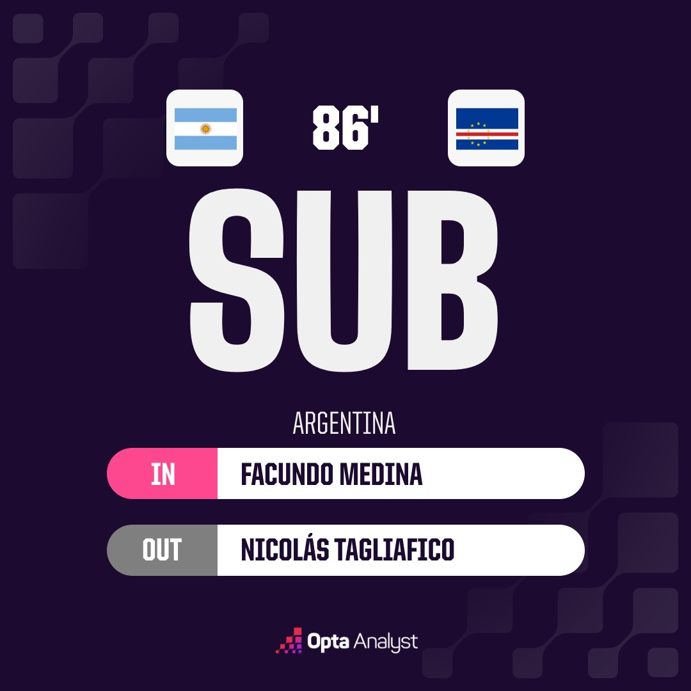
84'
No luck! Nico González takes on a shot that, had they got it right, might have been set to test the goalkeeper, but instead it is sent off target and Cabo Verde come away unscathed.
84'
Rodrigo De Paul’s match is over as Argentina decide to make a substitution. Leandro Paredes enters the field in what looks like a tactical change.
84'
It is a corner now to Argentina, with Cabo Verde somewhat hanging on here as they look to hold out for a positive result. Can Argentina make something of this set-piece opportunity?
80'
Jovane Cabral’s match is over as Cabo Verde decide to make a substitution. Hélio Varela enters the field in what looks like a tactical change.
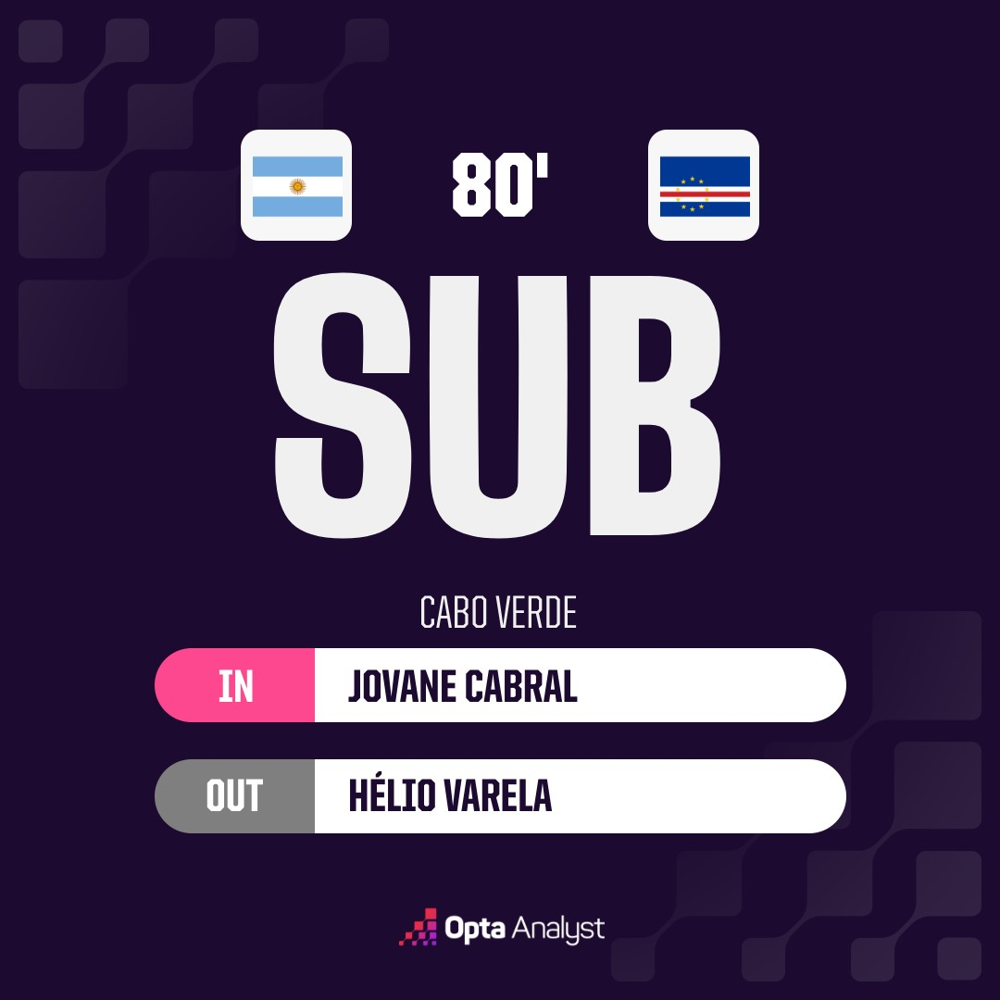
80'
A substitution for Cabo Verde sees Ryan Mendes replaced by Willy Semedo. There does not appear to be any obvious sign of an injury, so that is a tactical switch.
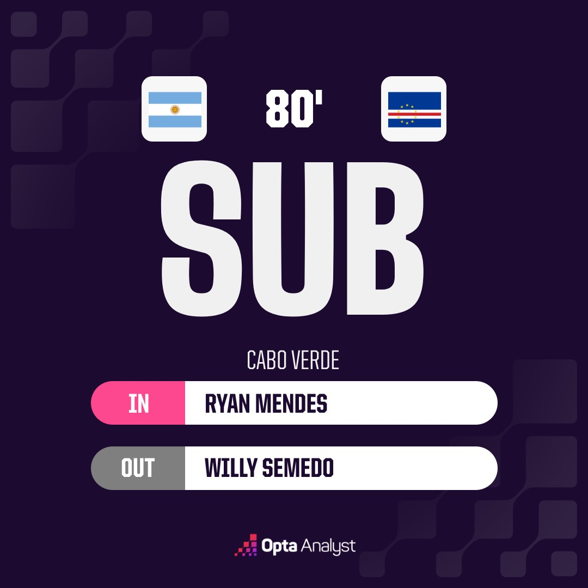
79'
Free-kick! A foul from Kevin Pina on Enzo Fernández. It is well away from Cabo Verde’s goal, so it is unlikely to result in a chance for Argentina.
78'
A rash challenge from Dailon Livramento, who sends Cristian Romero tumbling, giving Argentina a free-kick. It is not in a threatening position, but it gives them a chance to get back on the ball.
78'
A chance goes begging as Kevin Pina gets off a shot that does not hit the target. They might have done better with that one, but instead it is a goal-kick to Argentina.
77'
A free-kick in a dangerous position now for Cabo Verde, after a foul from Alexis Mac Allister on Jamiro Monteiro. Can Cabo Verde make Argentina pay for that rashness from Alexis Mac Allister?
76'
There is plenty of possession for Argentina, with 86.24% compared to Cabo Verde 13.76% in the last 15 minutes. However, Argentina have not been able to turn that dominance of the ball into a goal.
76'
Entering the final stages of this contest, let’s check on the possession stats for each team. It is Argentina who have had the more of the ball, with 65.77%, while Cabo Verde have had to settle for 34.23%. The score is 1-1.
73'
MISS! The score remains 1-1, with Cabo Verde relieved after Argentina’s Nico González goes for goal but sends their attempt off target. Not one to write home about, that one.
73'
Save! A long-range strike from Lionel Messi was heading in, but Vozinha got to it to parry it away from danger.
71'
This could be a chance for Argentina, after Deroy Duarte fouls Lionel Messi, handing them a free-kick in a threatening area. A good set-piece from here could really test the Cabo Verde defense!
69'
Lionel Messi has attempted 5 shots, the first time he has attempted at least 5 shots in a match in the FIFA World Cup since facing Austria on 22nd June 2026 (7 shots).
69'
That might have been going in! A fantastic block from Kevin Pina, who gets in the way of a goal-bound effort from Lionel Messi. Would the goalkeeper have been beaten? We will never know.
68'
That is a booking for Kevin Pina, who has received their first yellow card. They are not happy with the decision, but it is done now, and they will have to be careful for the rest of this game.
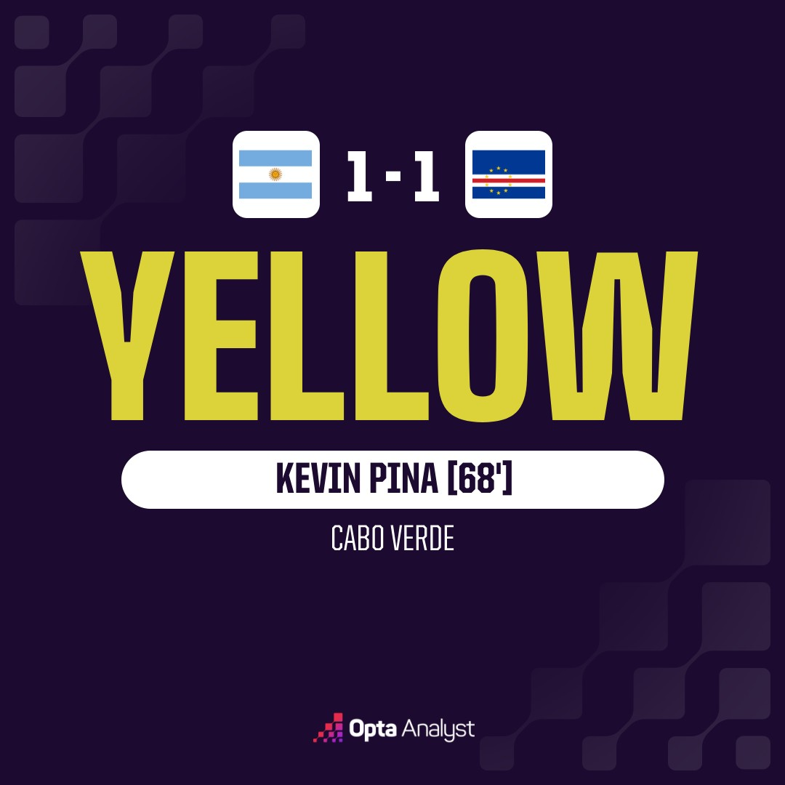
68'
This could be a chance for Argentina, after Kevin Pina fouls Lionel Messi, handing them a free-kick in a threatening area. A good set-piece from here could really test the Cabo Verde defense!
67'
Nuno da Costa’s match is over as Cabo Verde decide to make a substitution. Dailon Livramento enters the field in what looks like a tactical change.
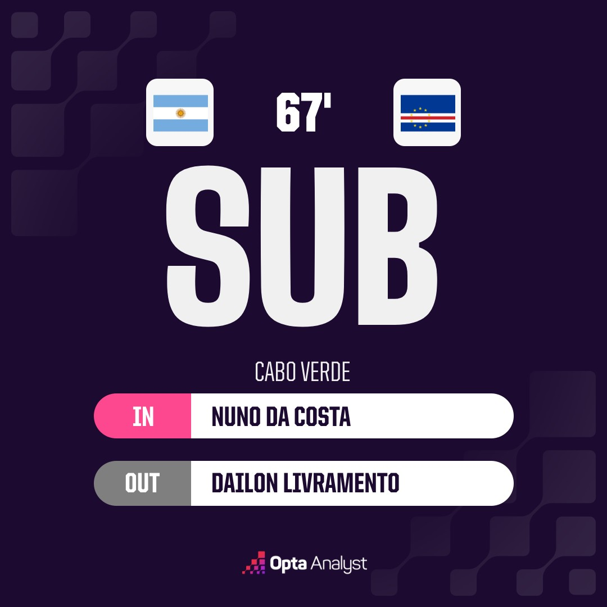
67'
Substitution! Jamiro Monteiro replaces Laros Duarte for Cabo Verde as the manager shuffles the pack. Can Jamiro Monteiro make an impression as this match continues?
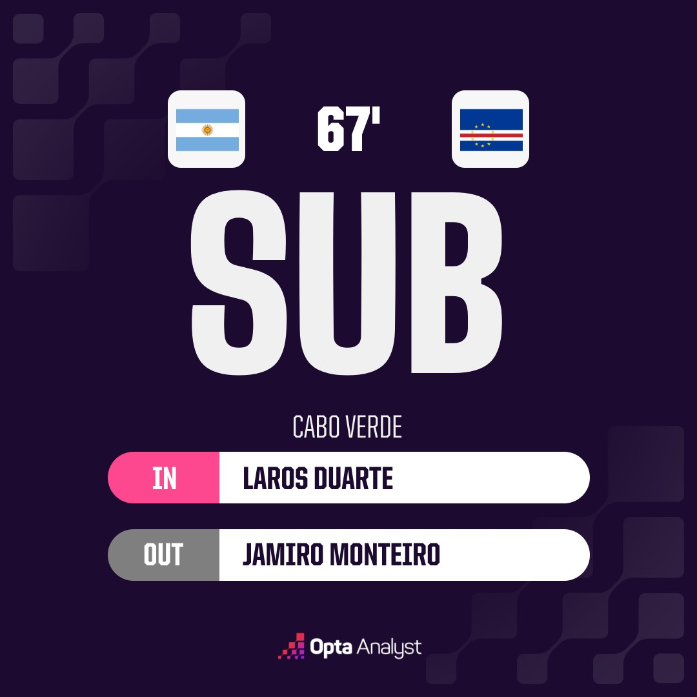
67'
A chance goes begging as Enzo Fernández gets off a shot that does not hit the target. They might have done better with that one, but instead it is a goal-kick to Cabo Verde.
66'
With 25 minutes left to play, it’s a good chance to check in on the shot count. Argentina have mustered 5 so far, with 4 of those landing on target. On the other hand, Cabo Verde have gotten 5 of their 2 of attempts on target.
64'
Substitution! Nico González replaces Thiago Almada for Argentina as the manager shuffles the pack. Can Nico González make an impression as this match continues?
63'
Lautaro Martínez’s match is over as Argentina decide to make a substitution. Julián Alvarez enters the field in what looks like a tactical change.
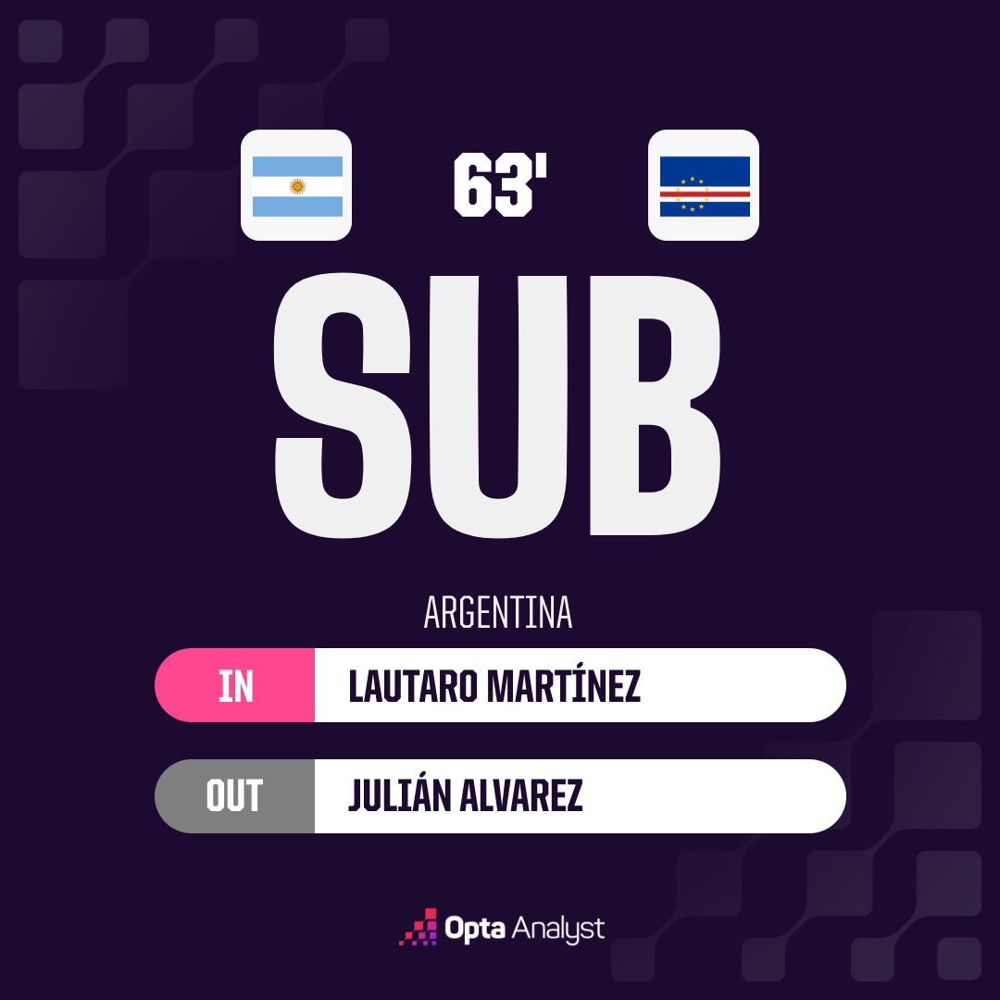
63'
A chance now for Argentina to get a good delivery into the box, after the ball is diverted behind for a corner. Argentina have been pushing for what would be a key goal, but Cabo Verde have stood firm so far.
63'
WHAT A MISS! Oh dear, oh dear, that is an awful attempt from Lionel Messi, as a huge chance for Argentina to score the goal they need goes begging. What a let off for Cabo Verde, though. They will have to defend better than that from here on out!
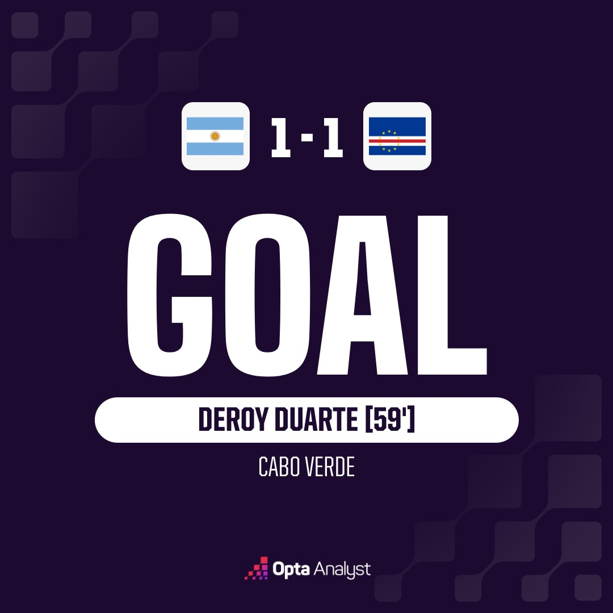
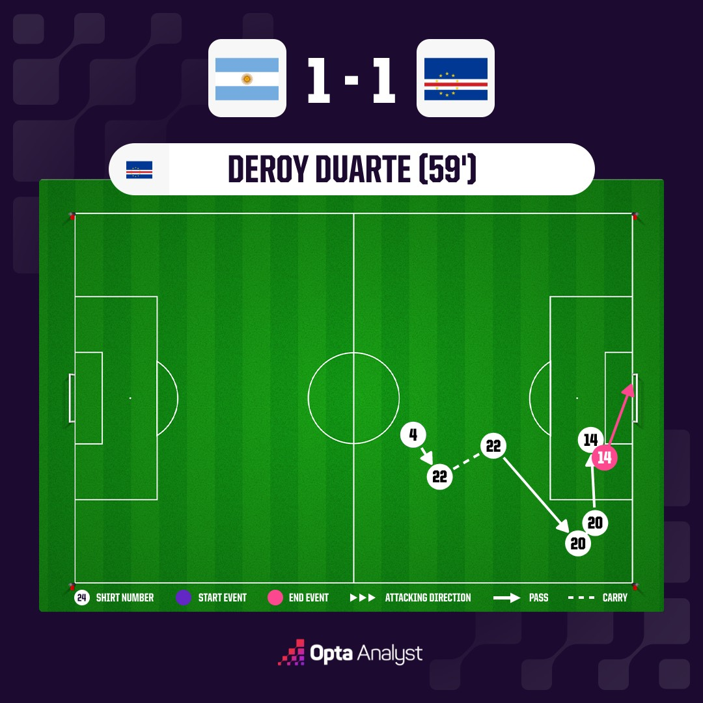
59'
Ryan Mendes has assisted his first goal in the 2026 FIFA World Cup.
59'
GOAL! Parity is restored by Deroy Duarte, who has hit home from inside the box to drag Cabo Verde level. Argentina had been hoping to see this out, but now might have to settle for a draw. Unless, there is to be a late winner…
59'
Deroy Duarte has scored his first goal in the 2026 FIFA World Cup.
58'
Free-kick! A foul from Cristian Romero on Laros Duarte. It is well away from Argentina’s goal, so it is unlikely to result in a chance for Cabo Verde.
58'
Despite trailing, Cabo Verde are showing real defensive grit, digging in and stopping further damage as they try to build a platform.
54'
That was hopeful! A bit of a punt from Deroy Duarte, who goes for goal from distance, but Emiliano Martínez makes the save.
53'
A foul from Thiago Almada on Steven Moreira sees Cabo Verde win a free-kick, but it is not in a dangerous position, so Argentina should be confident they can defend it easily enough.
50'
Excellent defensive work from Argentina; their organization and success in key duels are effectively safeguarding their lead.
50'
Set-piece after set-piece - Cabo Verde are turning up the pressure as they search for a breakthrough.
50'
A rash challenge from Lautaro Martínez, who sends Pico Lopes tumbling, giving Cabo Verde a free-kick. It is not in a threatening position, but it gives them a chance to get back on the ball.
50'
MISS! The score remains 0-1, with Argentina relieved after Cabo Verde’s Ryan Mendes goes for goal but sends their attempt off target. Not one to write home about, that one.
49'
Jovane Cabral's effort is deflected out for a corner. Can Cabo Verde make anything of this set-piece?
48'
It is a corner now to Cabo Verde, with Argentina somewhat hanging on here as they look to hold out for a positive result. Can Cabo Verde make something of this set-piece opportunity?
50'
Argentina are unbeaten in their last 7 FIFA World Cup matches when leading at half-time (W5, D2) dating back to 22nd November 2022 against Saudi Arabia (L1-2).
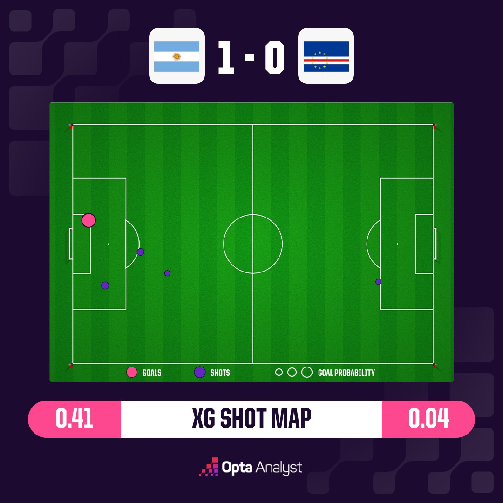
45+5'
Half-time! We reach the interval at Miami Stadium and it is Argentina who have a 1-0 lead over Cabo Verde. Can they hold on and see this out in the second half?
45+4'
Smart football from Argentina in this second period. They're keeping possession nicely with another patient build-up, content to manage their advantage while staying alert for counter-attacking opportunities.
45+2'
A foul from Lionel Messi on Sidny Cabral sees Cabo Verde win a free-kick, but it is not in a dangerous position, so Argentina should be confident they can defend it easily enough.
45+1'
Plenty of the ball in the last quarter-of-an-hour of this match for Argentina, but still Cabo Verde stand firm, despite having had only 34.87% of the ball in that period. Can Argentina make their possessional dominance count?
45+1'
Save! A long-range strike from Enzo Fernández was heading in, but Vozinha got to it to parry it away from danger.
43'
Free-kick! A foul from Lautaro Martínez on Vozinha. It is well away from Argentina’s goal, so it is unlikely to result in a chance for Cabo Verde.
43'
Free-kick! A foul from Diney Borges on Lionel Messi. It is well away from Cabo Verde’s goal, so it is unlikely to result in a chance for Argentina.
42'
A foul from Deroy Duarte on Enzo Fernández sees Argentina win a free-kick, but it is not in a dangerous position, so Cabo Verde should be confident they can defend it easily enough.
41'
The Cabo Verde defence steps up in time and there is a frustration for Facundo Medina, who thought they were through until the flag goes up to signal offside.
41'
Cabo Verde have not had a shot on target so far in this game.
41'
No goalmouth action for some time now, with neither team having had a shot in the past 10 minutes. Will there be a moment that changes things soon? Argentina have seen plenty of the ball, however, with 56 per cent of the possession in their favour during that period.
40'
A foul from Deroy Duarte on Thiago Almada sees Argentina win a free-kick, but it is not in a dangerous position, so Cabo Verde should be confident they can defend it easily enough.
37'
It has been 30 minutes since Cabo Verde last attempted a shot in this game.
36'
Offside! Nahuel Molina thought they were through on goal, but the Cabo Verde defence stepped up in time to catch them offside, and the assistant referee puts their flag up.
32'
Free-kick! A foul from Nahuel Molina on Jovane Cabral. It is well away from Argentina’s goal, so it is unlikely to result in a chance for Cabo Verde.
29'
Lisandro Martínez has assisted his first goal in the 2026 FIFA World Cup.
29'
Argentina have avoided defeat in their last 9 matches when scoring first in the FIFA World Cup, since a 1-2 loss to Saudi Arabia on 22nd November 2022.
29'
Lionel Messi has scored his 20th goal in the FIFA World Cup.
29'
GOAL! Lionel Messi scores! Argentina have the lead in this entertaining contest. There is still lots of time left for further drama, but that intervention from Lionel Messi has put Cabo Verde in a difficult position. Game on!
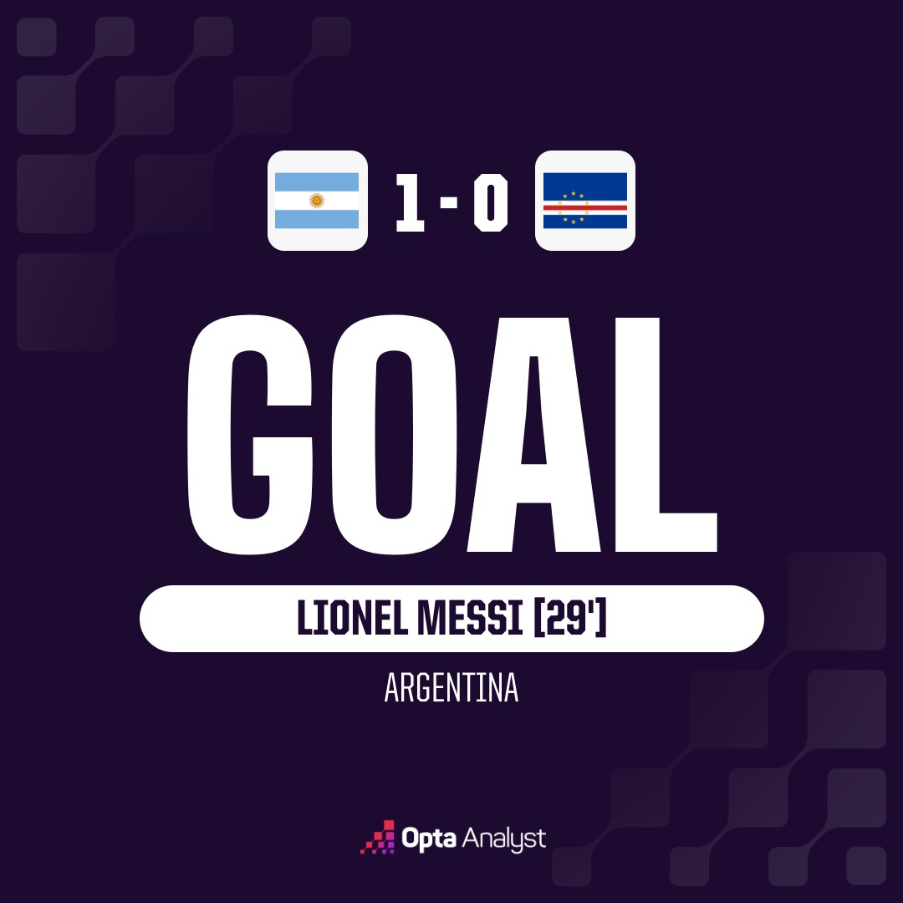
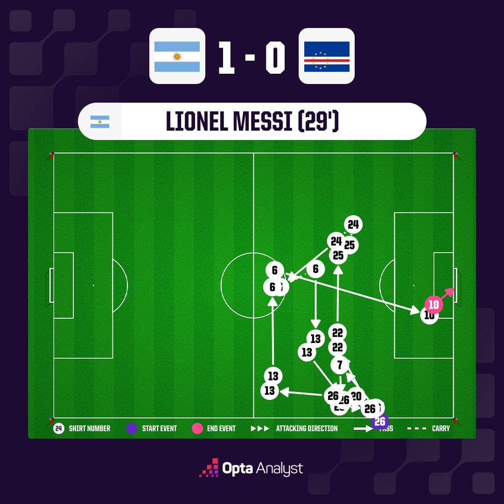
18'
SAVE! A shot from outside the box by Argentina Lionel Messi was heading in, but Cabo Verde Vozinha keeps it out with a smart stop.
17'
A free-kick in a dangerous position now for Argentina, after a foul from Jovane Cabral on Lionel Messi. Can Argentina make Cabo Verde pay for that rashness from Jovane Cabral?
16'
There is plenty of possession for Argentina, with 72.41% compared to Cabo Verde 27.59% in the last 15 minutes. However, Argentina have not been able to turn that dominance of the ball into a goal.
15'
MISS! The score remains 0-0, with Cabo Verde relieved after Argentina’s Lionel Messi goes for goal but sends their attempt off target. Not one to write home about, that one.
10'
A rash challenge from Cristian Romero, who sends Jovane Cabral tumbling, giving Cabo Verde a free-kick. It is not in a threatening position, but it gives them a chance to get back on the ball.
9'
Confident start by Argentina, knocking it around with purpose and keeping control in the opening phase.
7'
Shot blocked! Ryan Mendes unleashes an attempt at goal, but the ball does not reach its target thanks to Facundo Medina, who makes a solid block to stem the danger – for now.
6'
It’s been tight so far, and Argentina are making sure it stays that way with strong defensive discipline and well-timed clearances.
4'
A foul from Rodrigo De Paul on Sidny Cabral sees Cabo Verde win a free-kick, but it is not in a dangerous position, so Argentina should be confident they can defend it easily enough.
1'
Up and running! Cabo Verde have kicked off and this FIFA World Cup match is now under way at Miami Stadium. Let’s hope for an intriguing battle on the pitch.
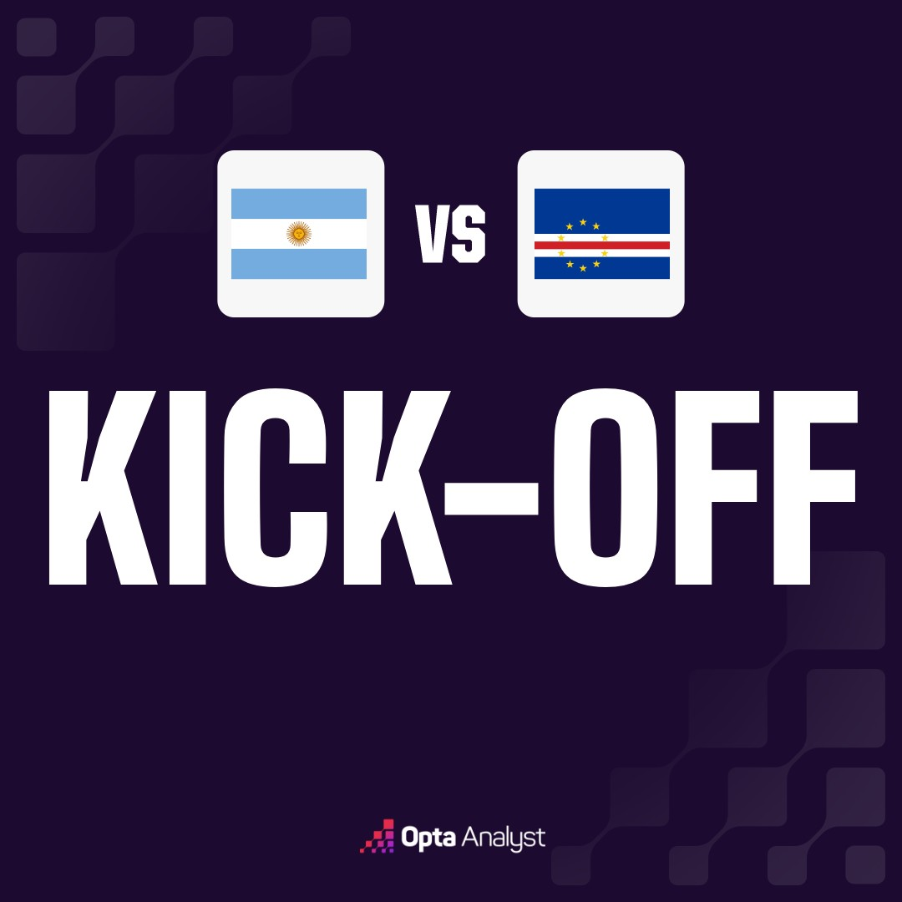
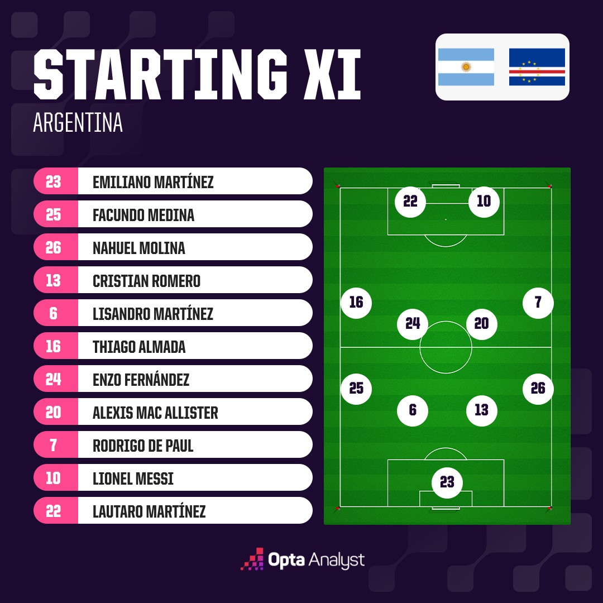
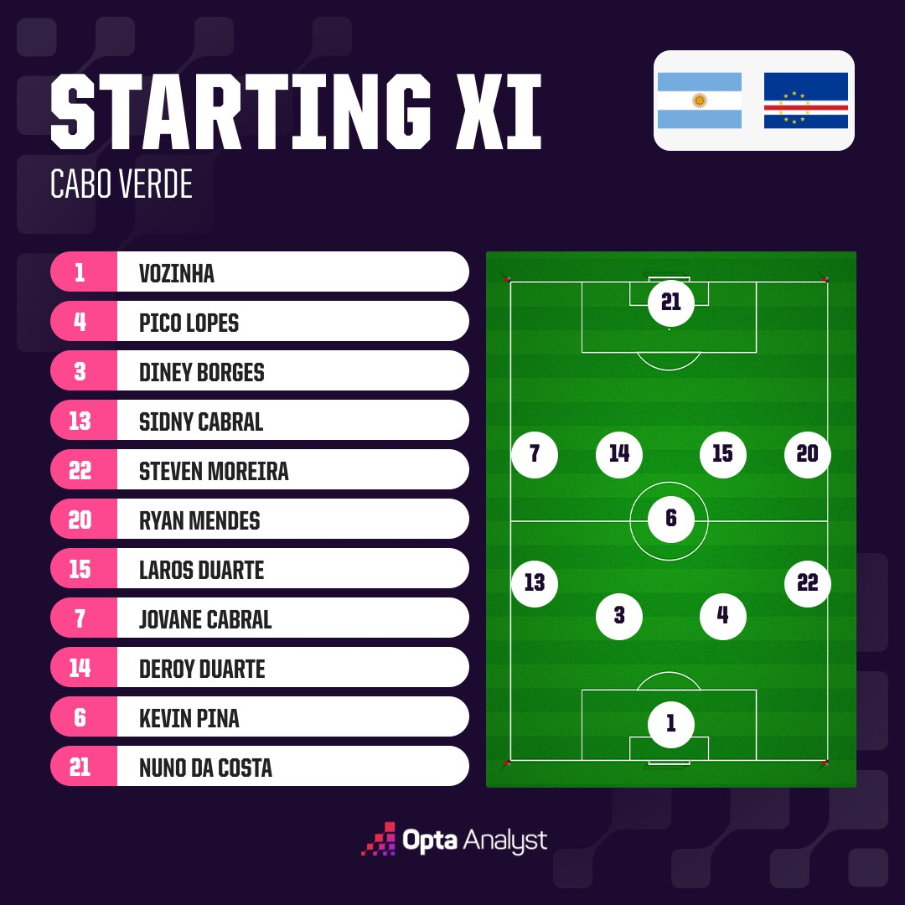
Lionel Messi is making his 30th appearance in the FIFA World Cup.
Cabo Verde have drawn their last 3 matches in a row
L. Messi has scored in the last 3 home games for Argentina
Argentina have outscored their opponents in both halves in each of their last 3 home games
Argentina have won their last 3 games at home when L. Messi has scored
-
General
Possession 63.6% 63.5536.4536.4% Possession lost in defensive half 20 203737 Possession lost in middle third 37 374747 Duels 112 112115115 Duels success rate 50.9% 50.89346.08746.1% Aerial duels 26 262626 Aerial duels won 53.8% 53.84646.15446.2% Successful dribbles 10 101212 Fouls won 12 121313 Offsides 3 322 Corner awarded 8 888 -
Distribution
Passes 850 850476476 Long passes 39 395151 Long passes proportion (%) 4.6% 4.58810.71410.7% Passing accuracy 91.6% 91.64785.92485.9% Passes in opponents' half 545 545227227 Passing accuracy in opponents' half (%) 89.4% 89.35879.73679.7% Total passes in the final third 286 286106106 Passing accuracy in final third (%) 83.2% 83.21770.75570.8% Forward passes 466 466293293 Forward passes (%) 54.8% 54.82461.55561.6% Through balls 12 1200 Final third entries 81 815757 Penalty area entries 47 472929 Total open play crosses 7 71212 Crosses 15 152020 Crossing accuracy 40.0% 402525.0% -
Attack
Goals 3 322 Shots 22 221616 Shots on target 10 1055 Blocked shots 7 766 Headed shots 5 522 Shots outside the box 7 71010 Shots inside the box 15 1566 Shots accuracy excluding blocked shots 66.7% 66.6675050.0% Shooting accuracy 45.5% 45.45531.2531.3% Key Passes 11 111111 -
Defence
Tackles 22 221919 Tackles success rate 59.1% 59.09136.84236.8% Clearances 24 242626 Interceptions 9 999 Recoveries 46 465151 Attacking third recovery 3 344 Defensive third recovery 17 173636 Midfield third recovery 26 261111 Recoveries in attacking half (%) 6.5% 6.5227.8437.8% -
Discipline
Fouls conceded 13 131212 Yellow cards 1 111 Red cards 0 000